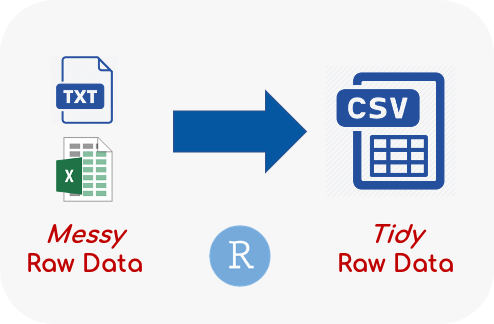

10 Data Processing Steps
There are three stages when processing data: 1) data preparation, 2) scoring and cleaning data, 3) preparing a single data file for statistical analysis.
Data Preparation
There are two scenarios in which you may need to start processing and analyzing data:
Before data collection has finished
After data collection has finished
For both of these scenarios, you will start with messy raw data files in some file format. Messy raw data files are hard to understand, have poor column and value labels, contain way too many columns and rows, and are just hard to work with. Data preparation is all about getting raw data files that are easy to work with.
The end product of the data preparation stage is tidy raw data files. Tidy raw data files are easy to understand, have sensible column and value labels, contain only relevant columns and rows, and are very easy to work with.
The Data Preparation stage is required because the data files created from the E-Prime or other software program are usually not in a format that is easy to use or understand. I am referring to this format as a messy raw data file. Also, there are typically other preparation steps one needs to take before they can start looking at the data. These might include merging individual subject data files and exporting the data to a non-proprietary format so we can import the data into R. The purpose of the data preparation stage is simply to create tidy raw data files from the messy raw data files.
Tidy raw data files are easy to use and understand. There will be one row per trial, column labels that are easy to understand (e.g. Trial, Condition, RT, Accuracy, etc.), and values in columns that make sense. If values in a column are categorical, then the category names will be used rather than numerical values. Ideally, someone not involved in the research project should be able to look at a tidy raw data file and understand what each column represents, and what the values in the column refer to.
Scoring and Cleaning Data
Once you have tidy raw data files, you can start scoring the tasks and implement any data cleaning procedures. In general, there are three steps that are typically done at this stage:
-
Scoring the data
This involves aggregating performance across trials on a task for each subject.
-
Cleaning the data
This involves removing subjects that are identified to be problematic and / or outliers.
-
Calculating reliability
For individual differences, it is important to report the reliability of each task.
Preparing a Single Data File
The scoring and cleaning data stage will produce scored data files for each task, but ultimately we want a single data file to use for statistical analysis.
Therefore, the next stage is to join all the scored data files into a single dataframe and select only relevant variables (columns) that we need for analysis.
Setup Project Folder
Before moving on to the other chapters in this section, create a research study project folder. See Appendix C on how to do this.